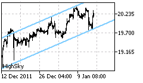
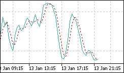
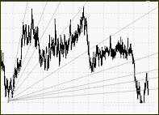
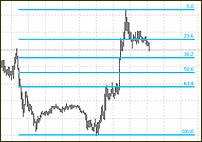

Technical analysis is the art of interpretation of charts in order to identify the current trend on the market and predict its future changes
Technical analysis is an art rather than “science” that is aimed at identifying trends on financial markets and their future development. In order to pursue this goal traders have many tools that come to their aid, including formations, oscillators and other studies such as Fibonacci or the Gann analysis.
Formations
Formations are the most basic and intuitive instruments to use directly on the charts for the purpose of technical analysis. They are used to identify trends and their reversals, but one of the most challenging activities is price forecasting.

Oscillators
Oscillators, together with formations, bring powerful possibilities for both traders and investors. As technical formations are aimed at identification of the trend and its changes, oscillators try to show the power of price movements and its dynamics, i.e. whether the current trend is strong or weak and how the situation is developing.

Gann
The Gann Analysis, created by W.D. Gann, is based on the study of Natural Law, Law of Vibration and geometric proportions like the square, triangle and circles. What makes these studies interesting for investors is the fact that Gann has actually used them very successfully on the commodity and capital markets since the beginning of the 20th century.

Fibonacci
The many Fibonacci analyses available are based on the so called “golden number” or Φ (Phi), an infinite number starting with: 1.6180339. Based on this number, Fibonacci created different ratios that may be used both for calculating price levels or for time series (i.e. moments where prices may dynamically change).

Bill Williams
Bill Williams' technical analysis methods are based on the chaos theory and psychology. According to him, profits from trading are determined by human psychology, and practically everyone may reach for market profits. Going forwards in his opinion, technical analysis or even fundamental analysis is not good decision-making mechanisms, because they are not based on the real market.

Elliott waves
The Elliot wave theory, created by R.N. Elliott, is sometimes considered to have the potential to incite controversy in terms of interpretation among its practitioners, even when analysing the same chart. The basic concept of the Elliott waves is that by using either impulse or corrective waves, one should be able to identify trends and moments where the trend may change direction. Together with the Fibonacci analysis, it may provide information on potential price targets.